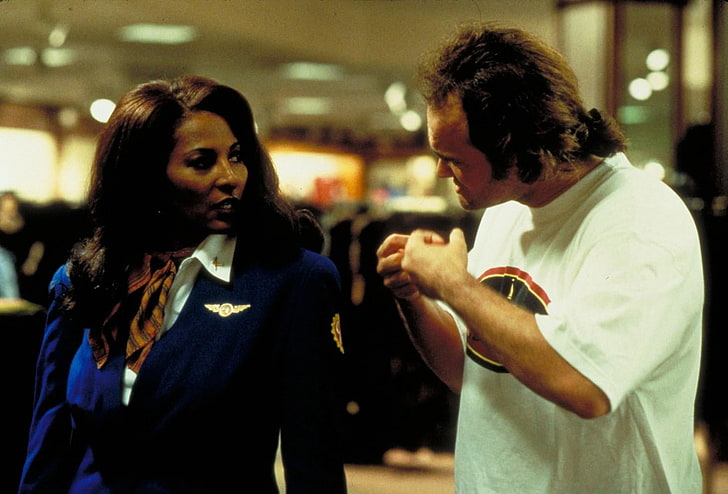
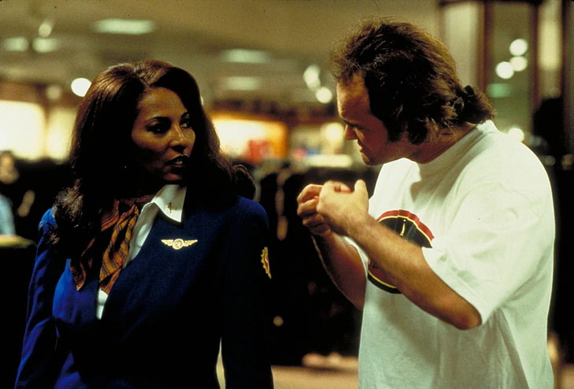

Los 9 Films de Quentin Tarantino
#1

Reservoir Dogs (1992)
Un grupo de criminales planea un robo a una joyería que rápidamente se convierte en un baño de sangre. A medida que el caos se desata, las tensiones aumentan entre los miembros del grupo, quienes sospechan que hay un infiltrado entre ellos. Con narrativa no lineal y diálogos filosos, Tarantino redefine el thriller criminal moderno.


#2

PULP FICTION (1994)
Historias entrelazadas de asesinos a sueldo, boxeadores, mafiosos y adictos se cruzan en este icónico relato lleno de violencia estilizada, humor negro y filosofía callejera. Pulp Fiction cimentó a Tarantino como un maestro del cine postmoderno y revolucionó el cine independiente de los 90.

#3

Jackie Brown (1997)
Una azafata de vuelos comerciales queda atrapada entre un traficante de armas, la policía y su propia astucia. En este homenaje al blaxploitation de los 70, Tarantino entrega un thriller maduro, pausado y centrado en personajes, donde el poder está en la palabra y la estrategia.

 

#4

Kill Bill Vol. 1 & 2 (2003–2004)
Una asesina conocida como "La Novia" despierta de un coma y comienza una sangrienta venganza contra sus antiguos compañeros y su líder, Bill. Mezclando artes marciales, western y animé, Tarantino construye una épica de venganza estilizada, dividida en dos partes complementarias: una visceral y la otra emocional.

#5
Death Proof (2007)
Un doble de riesgo psicópata utiliza su auto "a prueba de muerte" como arma para matar mujeres. Sin embargo, subestima a su segunda tanda de víctimas. Con espíritu grindhouse, esta película es tanto un homenaje al cine exploitation como una inversión del tropo de la "final girl".
#6

Inglourious Basterds (2009)
En una Segunda Guerra Mundial alternativa, un escuadrón de soldados judíos-americanos caza nazis en la Francia ocupada, mientras una joven judía planea su venganza desde un cine parisino. Tarantino reescribe la historia con tensión, humor negro y una cinefilia desbordante.

#7

Django Unchained (2012)
En el sur esclavista de Estados Unidos, un esclavo liberado se convierte en cazarrecompensas y lucha por rescatar a su esposa de un cruel terrateniente. Con influencias del spaghetti western y el cine de explotación, Tarantino combina violencia gráfica con crítica social.
#8

The Hateful Eight (2015)
Ocho desconocidos se refugian en una posada durante una tormenta de nieve en el viejo oeste, donde las tensiones raciales, políticas y personales se multiplican. En este western cerrado y teatral, Tarantino crea un juego de desconfianza, traición y violencia inevitable.

#9

Once Upon a Time in Hollywood (2019)
En el Hollywood de 1969, un actor en decadencia y su doble de riesgo buscan su lugar en una industria que cambia, mientras la sombra de los crímenes de la familia Manson se aproxima. Una carta de amor al cine clásico, teñida de melancolía, humor y revisionismo histórico.